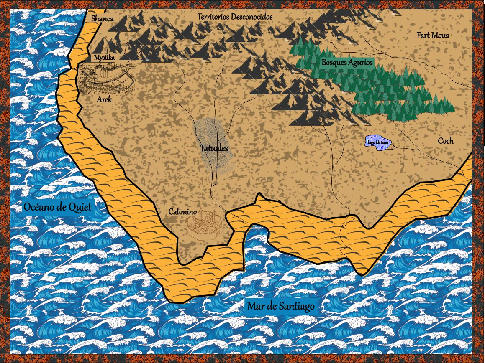
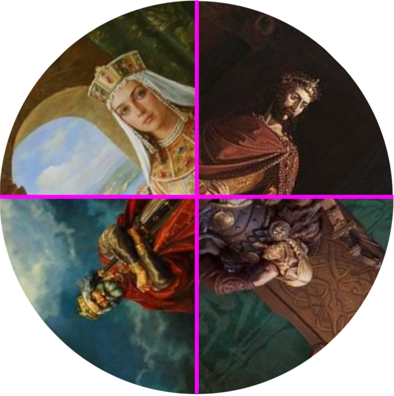
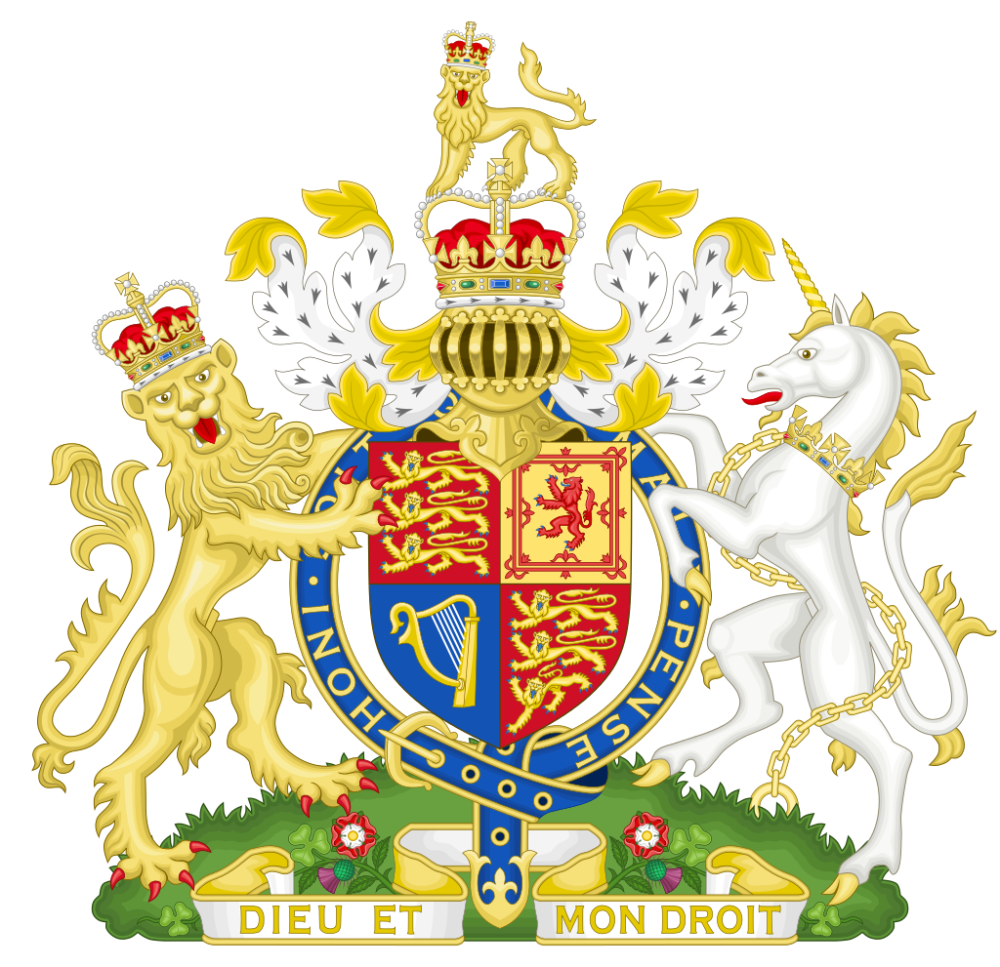

Bienvenidos mortales a Tautaquelonde . Un mundo de fantasía de temática medieval con magia y seres fantásticos. Un mundo de magos y hechiceras, de reyes y caballeros, de eruditos y religiosos. Donde luchan dos poderes principales provenientes de sendos dioses y que añoran el control total de Tautaquelonde y territorios cercanos.
Pero no te equivoques. Que sea mágico no quiere decir que sea maravilloso. Porque existe el dolor, la desigualdad , la injusticia , y ambiciones desmedidas ; los grandes males de todos los mundos. Por eso, Tautaquelonde sirve para conocer y comprender cualquier mundo, incluso el tuyo. Y sentirás que reconoces mucho de los personajes que caminan por él y puede que los ames u odies por esas razones. Pero no hay malos ni buenos solo seres que actúan según sus necesidades y conocimientos.
Entren a Tautaquelonde para fantasear sin despegar los pies de la tierra.
Geografía de Tautaquelonde
Tautaquelonde se extiende desde el mar De Santiago al sur y Shanca al norte (donde comienzan los territorios desconocidos). El sol alumbra primero a las naciones de Fart-Mous y Coch. Y desaparece al hundirse el gran océano de Quiet. Los desiertos de los valles de arena se encuentras antes de ese mar. Los Bosques Augurios limitan a Fart-Mous y algo hacia el sur. Y toda la región montañosa y del altiplano nos llevan a las tierras desconocidas. Estas regiones son famosas por ser el lugar donde nacieron los magos y hechiceras que más conocemos. Pero la región central de Tatúales es la cuna de la hechicera Valioshke quizás la más poderosa que Tautaquelonde haya recibido.
Religión
El panteón de Dioses es muy numeroso, pero dos son los dioses principales que manejan los poderes que dan vida a la magia de la tierra. Liberustel y Mamsocia. La energía masculina y femenina, el día y la noche, la fuerza y el conocimiento. Entidades duales, pero no antagónicas que buscan el bienestar de sus creaciones, pero mediante métodos diferentes. No intervienen directamente en las cuestiones políticas de los territorios. Son sus seguidores los que usan el poder que provienen de ellos y buscan hacerse del dominio de Tautaquelonde y conseguir así la paz y el bienestar al poner fin a las disputas entre ellos.
Política de Tautaquelonde
En Tautales, la ciudad más grande e importante, Gobierna el Rey Ulfur. Su legitimidad siempre ha sido puesta en duda porque fue el rey consorte de la verdadera heredera de esas tierras, la reina Kich de la dinastía Juper. Una dinastía querida por mucha gente. Más por los cuentos que se narran de esas épocas (que solo recuerdan las cosas buenas) que por lo que realmente significó esa dinastía para Tautaquelonde. El Rey Ulfur siempre está al borde de la caída, porque las cosas en aquellas tierras no han ido del todo bien. Entre enfermedades, sequías algunas guerras contra los seres del bosque Agurios; la gente no está conforme y piensa si no les iría mejor con cualquiera de los monarcas de las otras tierras.
Al Norte en su castillo de piedras blancas vive el Rey Lisandro. Muy interesado en los efectos de las plantas sagradas y creyendo que el secreto de un gran reino, descansa en las manos de Liberel y su poder de generar abundancia. Se cuenta que, en el catillo de Lisandro, en las mazmorras más profundas vive una antigua criatura que los más hombres de antaño adoraban con fervor y que los llevó a una guerra sagrada contra las criaturas de las montañas del norte y que la sangre pudo dejar de derramarse cuando esa criatura fue capturada. Pero todavía hay gente que piensa en que una criatura sagrada no puede permanecer encerrada y eso le causa ciertos problemas.
Calimino es una tierra rica y próspera por su ubicación estratégica en la bahía de Culmenar, donde se encuentran los puertos Agibotantes, principal entrada de mercaderías provenientes de más allá del mar de Santiago. El Rey Atenor Gobierna en su trono de Espuma de mar en la habitación solar rodeado de Riquezas. La gente de Calimino vive con holgura y la mayor parte de su vida, feliz. Solo importunada por la llegada, no frecuente, pero tampoco rara de los piratas de las islas Dolvilas. Su gran preocupación es reforzar las defensas y la seguridad. Sin darse cuenta que muchos de los piratas son gente de las propias tierras de Tautaquelonde que han quedado fuera del cuidado de Atenor y viajado a las islas en busca de algún futuro.
Finalmente, pero no menos importante es Gaya La reina de los ojos tristes. Reina sin castillo ni reino. Pero de una estirpe real anterior a la dinastía Juper. Que se creyó perdida luego de que su último Rey, Etchcar, viajara más allá de los territorios Desconocidos por consejo de Mago Jores “el que engañó a la muerte”. El rey partió cuando una plaga azotó Tautales y no había otra cura que las hojas de espliego de los arroyos cantarines de Widsnor. Solo un rey podía cortar dichas hojas sin que pierdan su capacidad curativa. La cura llegó, pero el rey se perdió en algún lugar al norte de Tautaquelonde. Ahora Gaya, descendiente directa de Etchcar reclama su lugar en el Catillo de Jade. Sede del poder de Tautales y Tautaquelonde.
Cultura de Tautaquelonde
Esa bruja lo había dejado intrigado. Le había dicho muchas cosas que él ya sabía y que sabía que le iba a decir. Pero le había dado una solución muy específica para su problema, demasiado precisa para ser una farsa: Solo conocería el amor cuando busque a esa mujer de cabellos de fuego que estaba condenada a que todos se enamoraran de ella al verla, pero no poder amar a ninguno por haber nacido sin corazón. Pero había un problema. Si no lograba enamorarla , si no conseguía que ella lo amara; si no encontraba el amor sincero moriría habiendo amado pero sin haberlo sido.

Heráldica de Tautaquelonde
Esa bruja lo había dejado intrigado. Le había dicho muchas cosas que él ya sabía y que sabía que le iba a decir. Pero le había dado una solución muy específica para su problema, demasiado precisa para ser una farsa: Solo conocería el amor cuando busque a esa mujer de cabellos de fuego que estaba condenada a que todos se enamoraran de ella al verla, pero no poder amar a ninguno por haber nacido sin corazón. Pero había un problema. Si no lograba enamorarla , si no conseguía que ella lo amara; si no encontraba el amor sincero moriría habiendo amado pero sin haberlo sido.
